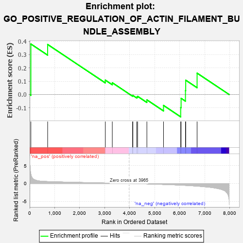
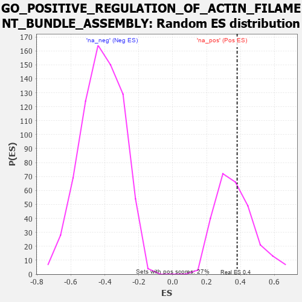

| | | Dataset | 7d |
| Phenotype | NoPhenotypeAvailable |
| Upregulated in class | na_pos |
| GeneSet | GO_POSITIVE_REGULATION_OF_ACTIN_FILAMENT_BUNDLE_ASSEMBLY |
| Enrichment Score (ES) | 0.37996906 |
| Normalized Enrichment Score (NES) | 1.0295012 |
| Nominal p-value | 0.4095941 |
| FDR q-value | 0.70472056 |
| FWER p-Value | 1.0 |
Table: GSEA Results Summary

Fig 1: Enrichment plot: GO_POSITIVE_REGULATION_OF_ACTIN_FILAMENT_BUNDLE_ASSEMBLY
Profile of the Running ES Score & Positions of GeneSet Members on the Rank Ordered List
| PROBE | GENE SYMBOL | GENE_TITLE | RANK IN GENE LIST | RANK METRIC SCORE | RUNNING ES | CORE ENRICHMENT | | 1 | TGFB3 | | | 49 | 2.654 | 0.3800 | Yes |
| 2 | ID1 | | | 719 | 0.555 | 0.3766 | No |
| 3 | WNT4 | | | 3023 | 0.146 | 0.1084 | No |
| 4 | SMAD3 | | | 3303 | 0.105 | 0.0886 | No |
| 5 | MTOR | | | 4114 | -0.025 | -0.0096 | No |
| 6 | ABL1 | | | 4125 | -0.027 | -0.0070 | No |
| 7 | WNT11 | | | 4282 | -0.056 | -0.0185 | No |
| 8 | BAG4 | | | 4314 | -0.061 | -0.0134 | No |
| 9 | LIMK1 | | | 4684 | -0.136 | -0.0400 | No |
| 10 | EPHA1 | | | 5349 | -0.285 | -0.0820 | No |
| 11 | RAC1 | | | 6036 | -0.484 | -0.0978 | No |
| 12 | EVL | | | 6052 | -0.490 | -0.0284 | No |
| 13 | TPM1 | | | 6226 | -0.545 | 0.0292 | No |
| 14 | CDC42 | | | 6236 | -0.548 | 0.1079 | No |
| 15 | PAK1 | | | 6691 | -0.757 | 0.1609 | No |
Table: GSEA details [plain text format]

Fig 2: GO_POSITIVE_REGULATION_OF_ACTIN_FILAMENT_BUNDLE_ASSEMBLY: Random ES distribution
Gene set null distribution of ES for GO_POSITIVE_REGULATION_OF_ACTIN_FILAMENT_BUNDLE_ASSEMBLY